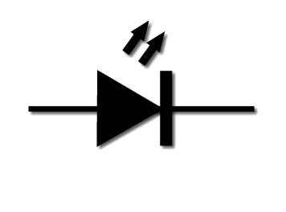
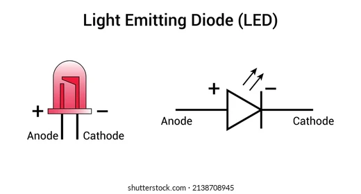
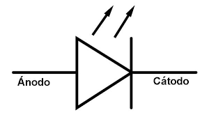
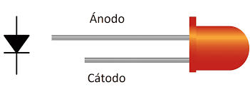
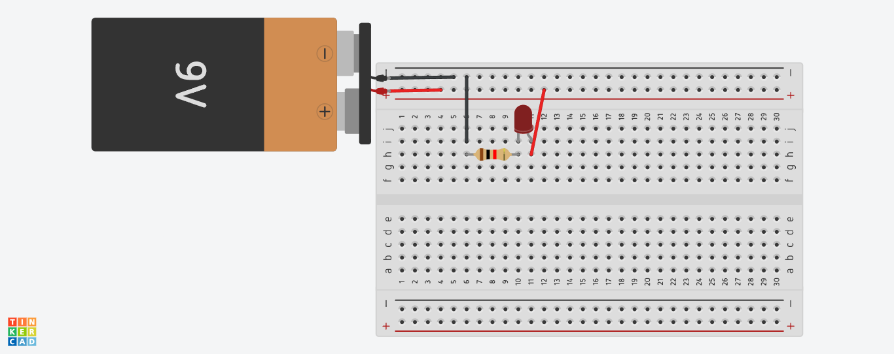

Diodo Led

¿Que es?
LED es el acrónimo de «Light Emitting Diode», que en español se traduce como Diodo Emisor de Luz. Un LED es un tipo especial de semiconductor que convierte la energia eléctrica directamente en luz visible, a través de un proceso conocido como electroluminiscencia. A diferencia de las bombillas tradicionales que generan luz mediante el calentamiento de un filamento, los LEDs producen luz a través de un fenómeno puramenre electrónico.Diodo Led
Simbolo Esquematico

¿Para que sirve?
El simbolo del LED es una version mejorada del simbolo del diodo convencional. Su estructura consta de varias partes:- Un triangulo apunta a una linea recta: esta parte es la misma que la de un diodo común, lo que indica que la corriente solo que puede fluir desde el ánodo al cátodo, lo que refleja la caracteristica de conducción unidireccional del diodo.
- Dos pequeñas flechas apuntando hacia afuera: Esta es la principal diferencia con los diodos convencionales. Las flechas indican que el LED puede emitir luz, lo que simboliza la liberación de fotones del chip LED.
¿Como funciona?
Un LED (diodo emisor de luz) funciona mediante electroluminiscencia, convirtiendo energia electrica en luz al pasar corriente por un material semiconductor. Los electrones se recombinan con huesos en la unión P-N, liberando energía en forma de fotones. Es un proceso eficiente, de baja emisión de calor y rápido, usado en iluminación y pantallas.
Caracteristicas Principales
- Funcionamiento y Polaridad: Emiten fotones cuando los electrones atraviesan la unión P-N. Tienen polaridad definida: el ánodo (+) es la pata larga y el cátodo (-) la corta. FUncionan solo en polarización directa.
- Eficiencia y Consumo: Ofrece gran potencia lumínica con muy bajo consumo de energía, siendo más eficientes que las bombillas tradiciolaes.
- Voltaje y Corriente: Requieren bajos voltajes (generalmente 1.5V - 2.5V) y pequeñas corrientes (aprox. 20mA - 40mA). Necesitan una resistencia en serie para limitar la corriente y evitar daños.
- Vida útil y Durabilidad: Tienen una vida util muy superior a las bombillas convencionales, llegando a superar las 60,000 horas. Son resistentes a vibraciones y golpes.
- Emisión de Luz: Ofrecen luz uniforme, inmediata, sin parpadeosy en diversos colores según el material semiconductor (GaAs, GaP, GaN)
- Temperatura y Emisión: Producen luz sin apenas generar calor (fríos al tacto) y no emiten radiación UV ni infrarrojo.
- Sostenibilidad: No contienen elementos tóxicos (como mercurio) y son reciclables.
Simbolo y Pinout

Simbolo Electrico

Si aplica, patillaje
Un diodo LED (Diodo Emisor de Luz) tiene patillaje polarizado, lo que significa que tiene un lado positivo y uno negativo que deben conectarse correctamente para que funcione.
Ejemplo Practico
Vamos a realizar un ejercicio basico y practico de como encender un diodo led.
Lista de componentes
- 1 Diodo Led
- 1 Resistencia
- 1 Protoboard
- 1 Bateria/Pila
En la siguiente imagen se muestra como conectar el diodo led. 
Datasheet
Error Comunes
Errores de Conexíon y Alimentación
- No usar resistencia limitadora (sobrealimentación): Conectar un LED directamente a una fuente de voltaje (bayeria o fuente de alimentación) si una resistencia en serie provoca que el diodo consuma demasiada corriente y se queme instataneamente o reduzca su vida útil.
- Invertir la polaridad: Los LEDs son dispositivos sensibles a la polaridad (ánodo + / cátodo -). Si se conectan al revés, no encenderán y, en voltajes altos, pueden dañarse.
- Voltaje incorrecto: Usar un driver (controlador) o fuente de alimentación que no coincida con el voltaje o la corriente requeridad por el LED (por ejemplo: usar 12V en una tira de 5V).
Errores de Diseño y Operación
- Falta de disipación de calor (Sobrecalentamiento): Aunque los LEDs son eficientes, generan calor en su base. No usar disipadores de aluminio o instalarlos en lugares cerrados sin ventilación provoca degradación lumínica (pierden brillo) y fallos prematuros.
- Parpadeo por incompatibilidad de Dimmer: Usar reguladores de intensidad (dimmers) diseñados para luces incandescentes con bombillas LED, lo que causa parpadeos o fallos en el circuito integrado.
- Conexión en serie ineficiente: Si se conectan muchos LEDs en serie y uno falla, el circuito se abre y ninguno enciende (como luces navideñas), dificultando identificar el LED quemado.
Errores de Instalación y Calidad
- Uso de productos de baja calidad: Los LEDs baratos suelen tener drivers (fuentes) de baja calidad que fallan rápidamente por sobretensiones.
- Falsos contactos o soldaduras frías: Conexiones mal hechas, cables sueltos o soldaduras deficientes causan intermitencia o parpadeo.
- Mal manejo (ESD): Manipular los LEDs sin precauciones contra descargas electrostáticas (ESD) puede dañarlos internamente antes de utilizarlos.